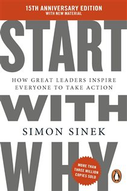

Library › Business & Startups
Start With Why — Summary & Key Lessons

How great leaders inspire everyone to take action — people don't buy WHAT you do, they buy WHY you do it.
📖 OPEN THE FULL INTERACTIVE BREAKDOWN →🌐 Read it in Hindi, Hinglish, Gujarati, Tamil & 22 more languages — free, with audio.
💡 The Big Idea
Why did Apple out-inspire technically superior competitors? Why did the Wright brothers beat the better-funded Langley? Why did Dr. King draw 250,000 with no invitations? Sinek's answer is the Golden Circle: WHY (the purpose/belief), HOW (the differentiating values/methods), WHAT (the products/proof). Inspired organizations communicate inside-out — starting with belief — and this maps onto the brain itself: the WHY speaks to the limbic system, where decisions, trust, and loyalty are actually made; the WHAT speaks to the rational neocortex, which merely rationalizes. Manipulation (price, promotions, fear) drives transactions; purpose drives movements.
🧠 The 6 Key Lessons
Lesson 1: The Golden Circle
Chapters 3–4: The Golden Circle / This Is Not Opinion, This Is Biology
Three concentric rings: WHAT (outer — every company knows its products), HOW (middle — some know their differentiators), WHY (center — almost none can state the purpose beyond profit; profit is a RESULT, not a why). Average organizations communicate outside-in ('great products, great features, buy one'); inspiring ones communicate inside-out ('we believe X; we express it through Y; the product is Z'). The order matters biologically: the limbic brain (feelings, trust, decisions, no language) responds to WHY; the neocortex (language, analysis) processes WHAT. That's why 'it just feels right' precedes every rationalized spec-sheet justification — and why facts alone never create loyalty.
📖 Example: Sinek's famous Apple rewrite. Outside-in (any PC maker): 'We make great computers. Beautifully designed, user friendly. Want one?' Inside-out (Apple): 'Everything we do challenges the status quo. We believe in thinking differently. We do this by making… Read the full example →
⚡ Do this: Write your own inside-out pitch: one sentence of belief, one of method, one of product. Test it against your current homepage/CV — which order are you communicating in?
Lesson 2: Manipulation Works — Once
Chapter 2: Carrots and Sticks
When organizations don't know their WHY, they default to manipulations: price drops, promotions, fear appeals, aspirational messaging, peer pressure, and novelty dressed as innovation. All of them WORK — for a transaction. None produce loyalty, and each dose escalates: discounts train buyers to wait for discounts (the American auto industry's rebate addiction), fear fades and needs re-terrorizing, novelty is copied in months. The tell is the churn: manipulation-built businesses re-win every customer every time at rising cost, while WHY-built businesses enjoy customers who defend, forgive, and return unprompted. Short-term revenue and long-term loyalty are different games with different physics.
📖 Example: GM's rebate era: billions in incentives bought market share that evaporated the moment the checks stopped — and trained an entire market to never pay sticker price. Contrast Harley-Davidson: customers tattoo the logo on their bodies — the ultimate loyalty… Read the full example →
⚡ Do this: Audit your persuasion toolkit — personal or business. Mark each tactic M (manipulation: price, fear, pressure, perks) or I (inspiration: belief, purpose). If it's mostly M, your 'loyalty' is a lease.
Lesson 3: The WHY Attracts Believers — Employees First
Chapters 5–7: Clarity, Discipline, Consistency / The Emergence of Trust
The goal is not to do business with everyone who needs what you have, but with people who BELIEVE what you believe — and that starts with hiring. Employees hired for skills work for the paycheck; employees hired for belief work with blood, sweat, and passion, and they innovate because the mission is theirs. Trust emerges when leaders prove they'll protect the tribe and when WHY, HOW, and WHAT stay aligned (Sinek's celery test: told to buy M&Ms, rice milk, oreos and celery, your WHY — say, health — instantly filters the list; alignment makes every decision faster and visibly consistent to outsiders). Great companies don't hire skilled people and motivate them; they hire motivated people and inspire them.
📖 Example: Shackleton's Antarctic recruitment ad, as Sinek tells it: 'Men wanted for hazardous journey. Small wages, bitter cold, long months of complete darkness, constant danger, safe return doubtful.' The ad filtered for believers — and when the Endurance was… Read the full example →
⚡ Do this: Rewrite your next job post (or your own job search) around belief: state the WHY first and let it repel the wrong applicants. Apply the celery test to this week's decisions: does each one visibly match your stated why?
Lesson 4: The Law of Diffusion: Win the Believers First
Chapter 7: How a Tipping Point Tips
Rogers' innovation curve: innovators (2.5%), early adopters (13.5%), early majority (34%), late majority (34%), laggards (16%). Mass-market success requires the early majority — but they won't move until someone else tries it first: the tipping point sits at 15–18% penetration. The strategic consequence: don't market to the middle (they need social proof you don't have yet); obsess over the left edge — the believers who buy WHY, queue overnight, tolerate imperfection, and evangelize. They become the social proof the majority requires. Chasing the pragmatic middle first with feature-lists and discounts is the expensive, loyalty-free route to mediocrity.
📖 Example: TiVo: objectively the best product of its category — pausing live TV! — marketed on WHAT it does to the mass market, and it flopped into a verb-without-a-business. Meanwhile the iPhone launched at $600, missing 'essential' features critics listed, and… Read the full example →
⚡ Do this: Identify your first 15%: who already believes what you believe? Serve and arm THEM (early access, community, tools to share) before spending anything chasing the skeptical middle.
Lesson 5: Keep the WHY From Going Fuzzy
Chapters 12–14: Split Happens / The Origin of a WHY
Organizations are born from a founder's WHY, scale through disciplined HOWs, and produce WHATs — but success itself is the danger: as the founder recedes and metrics take over, the WHY goes fuzzy ('the split'), and the company starts managing WHAT it does instead of leading WHY it exists. Symptoms: decisions take longer, culture needs 'programs,' customers feel the drift before the P&L shows it. The WHY, Sinek insists, comes from your past — the origin story and formative struggles — not from market research; recovering it is archaeology, not invention. And measurement must serve the why: celebrate the metrics that prove the belief, not just the ones that prove the quarter.
📖 Example: Walmart under Sam Walton had a WHY — serve people and communities with low prices as the METHOD; after his death, the method became the mission: cost-cutting as identity, and the same company that towns once welcomed began facing lawsuits, strikes, and… Read the full example →
⚡ Do this: Do the archaeology: write the origin story of why you/your company started — the injustice, itch, or ideal at the root. Distill it to one sentence starting 'We believe...' and check your current top three metrics against it.
Lesson 6: The Law of Diffusion: Why 15% Can Change the World
Part 4: The Why in Action
Sinek's explanation of how ideas spread: adoption follows a bell curve — innovators (2.5%), early adopters (13.5%), then the early majority (34%), and so on. The critical threshold is the first 15-18%: once the innovators and early adopters are on board, the majority follows almost automatically, and the idea reaches 'critical mass'. The practical consequence: you don't need to convince everyone — you need to find the people who believe what you believe and let them carry the message. Mass-market appeals (trying to convince the majority directly) fail; belief-based appeals (finding your believers first) succeed because they trigger the diffusion law naturally.
📖 Example: Sinek uses Martin Luther King Jr.'s movement: he didn't try to convince the majority — he gave voice to the believers, and the 'I Have a Dream' speech reached critical mass because the message resonated with the people who already shared the why, not because… Read the full example →
⚡ Do this: Stop trying to persuade the sceptics this week. List the 5 people most likely to already share your belief — and focus your message entirely on them. Let diffusion do the rest.
✅ 5-Step Action Plan
- Write your Golden Circle inside-out pitch: believe → method → product.
- Replace one manipulation (discount, fear, pressure) with one inspiration.
- Filter hires and clients by belief; run the celery test weekly.
- Find and arm your first 15% of true believers before chasing the middle.
- Excavate your origin story into one 'We believe...' sentence — align metrics to it.
💬 Best Quotes from Start With Why
- “People don't buy WHAT you do; they buy WHY you do it.”
- “There are only two ways to influence human behavior: you can manipulate it or you can inspire it.”
- “Dr. King gave the 'I Have a Dream' speech, not the 'I Have a Plan' speech.”
Interactive version: mark lessons as read, listen in your language, share quote cards.